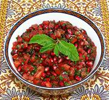

|
Tomato & Pom RelishAfghanistan | ||||
| Makes: Effort: Sched: DoAhead: |
1-1/4 cup ** 1-1/4 hrs Best |
In Afghanistan, this sweet-tart tomato and pomegranate relish is used with fried, roasted and grilled meats, such as kebabs and patties. | |||
|
12 6 1 1 1/3 1 1 1/2 2 |
oz oz cl c T t t T |
Tomatoes, ripe (1) Pomegranate Seeds Garlic Chili, Green (2) Cilantro Leaves Mint Leaves Salt Sugar |
Make - (1+ hr - 40 min work)
|